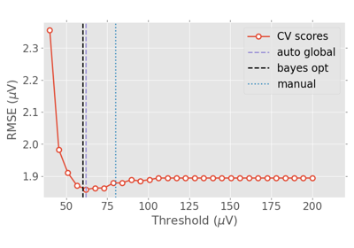

autoreject.validation_curve#
- autoreject.validation_curve(epochs, y=None, param_name='thresh', param_range=None, cv=None, return_param_range=False, n_jobs=1)[source]#
Validation curve on epochs for global autoreject.
- Parameters:
- epochsinstance of
mne.Epochs The epochs.
- y
array|None The labels.
- param_name
str Name of the parameter that will be varied. Defaults to ‘thresh’.
- param_range
array|None The values of the parameter that will be evaluated. If None, 15 values between the min and the max threshold will be tested.
- cv
int|sklearn.model_selectionobject | iterable |None Determines the cross-validation strategy. Defaults to None.
- return_param_rangebool
If True the used param_range is returned. Defaults to False.
- n_jobs
int The number of thresholds to compute in parallel.
- epochsinstance of
- Returns:
Examples using autoreject.validation_curve#

Plotting the cross-validation curve
Plotting the cross-validation curve